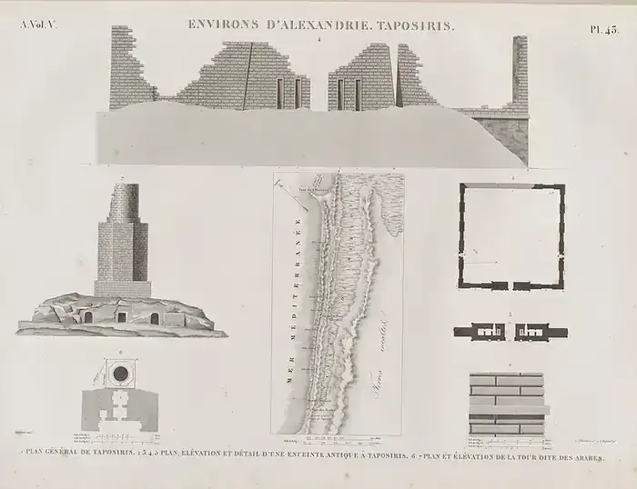
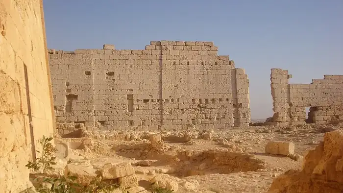
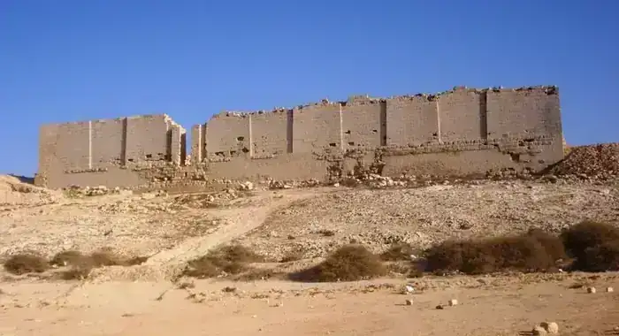

The site
Taposiris Magna is a temple complex on the coast west of Alexandria, built in the Ptolemaic period. Excavations led by Kathleen Martinez since 2005 have found coins bearing Cleopatra's image, a necropolis, statues, and a large tunnel cut through rock, along with evidence of royal burials.
Maps, diagrams and images






The claim
Martinez argues that Cleopatra and Mark Antony were buried at the site rather than in Alexandria, based on the coins, the temple's dedication, and the tunnel's scale. Other Egyptologists note that the coins and burials are consistent with an ordinary Ptolemaic temple and necropolis, and that no royal burial has been found.
The site's excavation is real and continuing, and the question could be settled by a find. Until then the identification is a hypothesis.
Documented: the temple, the coins, the tunnel and the necropolis.
Contested: the identification with Cleopatra's tomb.
Not found: any royal burial.
Ongoing: the excavation.
The honest label: live debate.
Why it is in the archive
Because it is a live archaeological search with real finds and no conclusion, which is what most of this shelf looks like before the answer arrives.
Open resources on this topic
- PapersOpen-access articles: DOAJ · PubMed Central · Internet Archive Scholar
- BooksPublic-domain and borrowable copies: Open Library · Project Gutenberg · Google Books · Internet Archive
More images
Cite this page
Momin, S. (2026). Cleopatra at Taposiris Magna. The Larger World Archive. https://drsamonline.github.io/LARGE_GLOBE/cleopatra-taposiris.htmlMomin, Sohil. “Cleopatra at Taposiris Magna.” The Larger World Archive, 2026, https://drsamonline.github.io/LARGE_GLOBE/cleopatra-taposiris.html.Momin, Sohil. “Cleopatra at Taposiris Magna.” The Larger World Archive, 2026. https://drsamonline.github.io/LARGE_GLOBE/cleopatra-taposiris.html.@misc{cleopatra2026cleopatra,
author = {Momin, Sohil},
title = {Cleopatra at Taposiris Magna},
year = {2026},
howpublished = {The Larger World Archive},
url = {https://drsamonline.github.io/LARGE_GLOBE/cleopatra-taposiris.html},
note = {Last reviewed 20 November 2026}
}Last reviewed 20 November 2026 · Corrections policy · this page is not peer reviewed
Sources for this page
- Wikipedia, “Taposiris Magna” — the siteen.wikipedia.org
- Wikipedia, “Cleopatra” — the queenen.wikipedia.org
- Wikipedia, “Ptolemaic Kingdom” — the perioden.wikipedia.org
- Wikipedia, “Alexandria” — the cityen.wikipedia.org